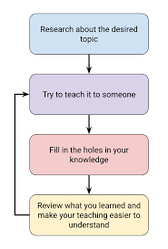

Learning with the Feynman Technique
Andrew Nolan
2023-04-30
There are a lot of different methods you can use to learn. One of my favorite strategies is the Feynman Technique.
Richard Feynman was an insanely influential physicist in the 20th century. He has a nobel prize in physics, he described the behavior of subatomic particles, he helped work on the atomic bomb, he helped pioneer nanotechnology and quantum computing. He has really done everything! If you want more info on that, you can check out his massive Wikipedia article.

So, yeah, Feynman is super impressive. But apart from his contributions to science, he also had major contributions to education. Nicknamed "the Great Explainer," Feynman was a famously good lecturer. Some of his undergraduate physics classes have been captured in the textbook The Feynman Lectures on Physics. Bill Gates even called him "the greatest teacher I never had."
This guy was great at everything. The thing I am most interested in though, is his proposed learning technique.
The Feynman Technique is a style of learning by teaching. The idea is to explain a complex topic at a level anyone can understand. Using this can help identify gaps in your knowledge and reinforce your understanding. Plus, as a nice side effect, it helps improve communication skills as well.
In this blog, I am going to go in-depth on how to use the Feynman Technique and some examples of its positive effects. I hope by reading this you can find a new technique to help you improve your own studying or maybe a new tool you can leverage in your classrooms!
Overview of Technique
There are several different formulations of the Feynman Technique, but at its core, it is a four step process:
- Determine the topic you want to learn and write down what you know about it. Break it down into short bullet points highlighting the basic ideas.
- Explain the topic to someone unfamiliar with it. Prepare as if you are teaching a child, make it as simple as possible.
- Identify any gaps or weaknesses in your understanding.
- Review and simplify more.
Once you complete the steps, you can repeat steps 2 through 4 until you are comfortable with your understanding.
As we'll discuss in the next section, there have been studies showing the benefits of teaching for learning. Another key principle of the Feynman Technique is breaking complex concepts into simple parts and explaining them to someone unfamiliar. Specifically, for step 2 it is recommended to explain the concept to a child or prepare as if you would teach a child. This encourages you to break it down into the most simple components.
Feynman's pedagogical goals were to move learning away from rote memorization and move it towards critical thinking and clear presentation, as that will better prepare students for the real world and strengthen their skills. These ideals are emphasized by this method.
Breaking things down and reconstructing them to teach is a reconstructive act on information and could be considered high in the famous Bloom's Hierarchy of learning. To reference another famous physicist:
"If you can't explain it simply, you don't understand it well enough." - Albert Einstein
Research and an Example in Action
Unfortunately, and somewhat surprisingly, there is not too much research on this technique. There is a lot of research on teaching as learning methods, but not the Feynman Technique specifically. I personally think it could be very effective especially with the way the learning and technological landscape has changed in recent years.
During the early years of the COVID pandemic, there was a major shift in educational instruction with the move to remote learning. While I believe face-to-face (remote or in-person) instruction is immensely valuable, some other researchers saw merit in moving towards a more self-paced learning approach known as heutagogy.
Heutagogy: a student-centered learning theory that allows for self-directed learning focusing on the development of lifelong learning skills.
A 2021 study from the University of San Jose-Recoletos in the Philippines titled "Feynman Technique as a Heutagogical Learning Strategy for Independent and Remote Learning" examined this idea. The study conducted a pre and post test on approximately 100 K-12 students in grades 4, 7, and 11 (around 30-40 students per age group). Participants were randomly assigned to receive traditional instruction of a Feynman style instruction. The study showed students using the Feynman Technique performed better on the post test by a statistically significant margin. The study ends by claiming the experiment proves the effectiveness of the Feynman technique in all age groups for improving learning outcomes.
It is sad that there are not many more papers researching this technique. But I am glad this one is out there. The San Jose-Recoletos study is relatively recent and about a new phenomenon with remote online learning. As technology and teaching evolve, perhaps there will be more room to investigate this learning method. I could see benefits to having an AI assistant to help in steps 2 and 3 of the Feynman Technique allowing for someone you can explain to and help identify your knowledge gaps.
Conclusion
The Feynman Technique is well used, although maybe not well researched yet. However, I believe it is a powerful and easy to use method that can help improve student outcomes and learning.
There are a couple other "learning by teaching" techniques, like Rubber Duck debugging. Another particularly interesting one is Flipped Classroom learning. I encourage you to look into these if you're interested, maybe I will write about them someday too! :^)
Enjoyed this article? Hoping for more AI blogs? Subscribe to the RSS Feed!